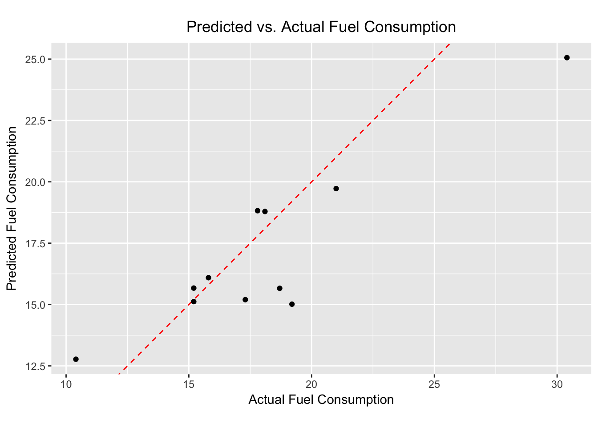

Spark Machine Learning Library (MLlib)
Overview
sparklyr provides bindings to Spark’s distributed machine learning library. In particular, sparklyr allows you to access the machine learning routines provided by the spark.ml package. Together with sparklyr’s dplyr interface, you can easily create and tune machine learning workflows on Spark, orchestrated entirely within R.
sparklyr provides three families of functions that you can use with Spark machine learning:
- Machine learning algorithms for analyzing data (
ml_*) - Feature transformers for manipulating individual features (
ft_*) - Functions for manipulating Spark DataFrames (
sdf_*)
An analytic workflow with sparklyr might be composed of the following stages. For an example see Example Workflow.
- Perform SQL queries through the sparklyr dplyr interface,
- Use the
sdf_*andft_*family of functions to generate new columns, or partition your data set, - Choose an appropriate machine learning algorithm from the
ml_*family of functions to model your data, - Inspect the quality of your model fit, and use it to make predictions with new data.
- Collect the results for visualization and further analysis in R
Algorithms
Spark’s machine learning library can be accessed from sparklyr through the ml_* set of functions:
| Function | Description |
|---|---|
ml_kmeans |
K-Means Clustering |
ml_linear_regression |
Linear Regression |
ml_logistic_regression |
Logistic Regression |
ml_survival_regression |
Survival Regression |
ml_generalized_linear_regression |
Generalized Linear Regression |
ml_decision_tree |
Decision Trees |
ml_random_forest |
Random Forests |
ml_gradient_boosted_trees |
Gradient-Boosted Trees |
ml_pca |
Principal Components Analysis |
ml_naive_bayes |
Naive-Bayes |
ml_multilayer_perceptron |
Multilayer Perceptron |
ml_lda |
Latent Dirichlet Allocation |
ml_one_vs_rest |
One vs Rest |
Formulas
The ml_* functions take the arguments response and features. But features can also be a formula with main effects (it currently does not accept interaction terms). The intercept term can be omitted by using -1.
# Equivalent statements
ml_linear_regression(z ~ -1 + x + y)
ml_linear_regression(intercept = FALSE, response = "z", features = c("x", "y"))Transformers
A model is often fit not on a dataset as-is, but instead on some transformation of that dataset. Spark provides feature transformers, facilitating many common transformations of data within a Spark DataFrame, and sparklyr exposes these within the ft_* family of functions. These routines generally take one or more input columns, and generate a new output column formed as a transformation of those columns.
| Function | Description |
|---|---|
ft_binarizer |
Threshold numerical features to binary (0/1) feature |
ft_bucketizer |
Bucketizer transforms a column of continuous features to a column of feature buckets |
ft_discrete_cosine_transform |
Transforms a length NN real-valued sequence in the time domain into another length NN real-valued sequence in the frequency domain |
ft_elementwise_product |
Multiplies each input vector by a provided weight vector, using element-wise multiplication. |
ft_index_to_string |
Maps a column of label indices back to a column containing the original labels as strings |
ft_quantile_discretizer |
Takes a column with continuous features and outputs a column with binned categorical features |
ft_sql_transformer |
Implements the transformations which are defined by a SQL statement |
ft_string_indexer |
Encodes a string column of labels to a column of label indices |
ft_vector_assembler |
Combines a given list of columns into a single vector column |
Utilities
Functions for interacting with Spark ML model fits.
| Function | Description |
|---|---|
ml_binary_classification_eval |
Calculates the area under the curve for a binary classification model. |
ml_classification_eval |
Calculates performance metrics (i.e. f1, precision, recall, weightedPrecision, weightedRecall, and accuracy) for binary and multiclass classification model. |
ml_tree_feature_importance |
Calculates variable importance for decision trees (i.e. decision trees, random forests, gradient boosted trees). |
ml_saveload |
Save and load model fits. For use with scoring models across platforms (e.g. using a model as an estimator in a Spark application). These functions are currently experimental and not yet ready for production use. |
Extensions
Functions for creating custom wrappers to other Spark ML algorithms.
| Function | Description |
|---|---|
ensure |
Enforces Specific Structure for R Objects. |
ml_create_dummy_variables |
Given a column in a Spark DataFrame, generate a new Spark DataFrame containing dummy variable columns. |
ml_model |
Creates an ML Model Object. |
ml_options |
Provides Options for Spark.ML Routines. |
ml_prepare_dataframe |
Prepares a Spark DataFrame for Spark ML Routines. |
ml_prepare_response_features_intercept |
Pre-process / normalize the inputs typically passed to a Spark ML routine. |
Examples
We will use the iris data set to examine a handful of learning algorithms and transformers. The iris data set measures attributes for 150 flowers in 3 different species of iris.
library(sparklyr)
library(ggplot2)
library(dplyr)##
## Attaching package: 'dplyr'## The following objects are masked from 'package:stats':
##
## filter, lag## The following objects are masked from 'package:base':
##
## intersect, setdiff, setequal, unionsc <- spark_connect(master = "local")## * Using Spark: 2.1.0iris_tbl <- copy_to(sc, iris, "iris", overwrite = TRUE)
iris_tbl## # Source: table<iris> [?? x 5]
## # Database: spark_connection
## Sepal_Length Sepal_Width Petal_Length Petal_Width Species
## <dbl> <dbl> <dbl> <dbl> <chr>
## 1 5.1 3.5 1.4 0.2 setosa
## 2 4.9 3.0 1.4 0.2 setosa
## 3 4.7 3.2 1.3 0.2 setosa
## 4 4.6 3.1 1.5 0.2 setosa
## 5 5.0 3.6 1.4 0.2 setosa
## 6 5.4 3.9 1.7 0.4 setosa
## 7 4.6 3.4 1.4 0.3 setosa
## 8 5.0 3.4 1.5 0.2 setosa
## 9 4.4 2.9 1.4 0.2 setosa
## 10 4.9 3.1 1.5 0.1 setosa
## # ... with more rowsK-Means Clustering
Use Spark’s K-means clustering to partition a dataset into groups. K-means clustering partitions points into k groups, such that the sum of squares from points to the assigned cluster centers is minimized.
## * No rows dropped by 'na.omit' call# print our model fit
kmeans_model## K-means clustering with 3 clusters
##
## Cluster centers:
## Petal_Width Petal_Length
## 1 1.359259 4.292593
## 2 0.246000 1.462000
## 3 2.047826 5.626087
##
## Within Set Sum of Squared Errors = 31.41289# predict the associated class
predicted <- sdf_predict(kmeans_model, iris_tbl) %>%
collect
table(predicted$Species, predicted$prediction)##
## 0 1 2
## setosa 0 50 0
## versicolor 48 0 2
## virginica 6 0 44# plot cluster membership
sdf_predict(kmeans_model) %>%
collect() %>%
ggplot(aes(Petal_Length, Petal_Width)) +
geom_point(aes(Petal_Width, Petal_Length, col = factor(prediction + 1)),
size = 2, alpha = 0.5) +
geom_point(data = kmeans_model$centers, aes(Petal_Width, Petal_Length),
col = scales::muted(c("red", "green", "blue")),
pch = 'x', size = 12) +
scale_color_discrete(name = "Predicted Cluster",
labels = paste("Cluster", 1:3)) +
labs(
x = "Petal Length",
y = "Petal Width",
title = "K-Means Clustering",
subtitle = "Use Spark.ML to predict cluster membership with the iris dataset."
)
Linear Regression
Use Spark’s linear regression to model the linear relationship between a response variable and one or more explanatory variables.
lm_model <- iris_tbl %>%
select(Petal_Width, Petal_Length) %>%
ml_linear_regression(Petal_Length ~ Petal_Width)## * No rows dropped by 'na.omit' calliris_tbl %>%
select(Petal_Width, Petal_Length) %>%
collect %>%
ggplot(aes(Petal_Length, Petal_Width)) +
geom_point(aes(Petal_Width, Petal_Length), size = 2, alpha = 0.5) +
geom_abline(aes(slope = coef(lm_model)[["Petal_Width"]],
intercept = coef(lm_model)[["(Intercept)"]]),
color = "red") +
labs(
x = "Petal Width",
y = "Petal Length",
title = "Linear Regression: Petal Length ~ Petal Width",
subtitle = "Use Spark.ML linear regression to predict petal length as a function of petal width."
)
Logistic Regression
Use Spark’s logistic regression to perform logistic regression, modeling a binary outcome as a function of one or more explanatory variables.
# Prepare beaver dataset
beaver <- beaver2
beaver$activ <- factor(beaver$activ, labels = c("Non-Active", "Active"))
copy_to(sc, beaver, "beaver")## # Source: table<beaver> [?? x 4]
## # Database: spark_connection
## day time temp activ
## <dbl> <dbl> <dbl> <chr>
## 1 307 930 36.58 Non-Active
## 2 307 940 36.73 Non-Active
## 3 307 950 36.93 Non-Active
## 4 307 1000 37.15 Non-Active
## 5 307 1010 37.23 Non-Active
## 6 307 1020 37.24 Non-Active
## 7 307 1030 37.24 Non-Active
## 8 307 1040 36.90 Non-Active
## 9 307 1050 36.95 Non-Active
## 10 307 1100 36.89 Non-Active
## # ... with more rowsbeaver_tbl <- tbl(sc, "beaver")
glm_model <- beaver_tbl %>%
mutate(binary_response = as.numeric(activ == "Active")) %>%
ml_logistic_regression(binary_response ~ temp)## * No rows dropped by 'na.omit' callglm_model## Call: binary_response ~ temp
##
## Coefficients:
## (Intercept) temp
## -550.52331 14.69184PCA
Use Spark’s Principal Components Analysis (PCA) to perform dimensionality reduction. PCA is a statistical method to find a rotation such that the first coordinate has the largest variance possible, and each succeeding coordinate in turn has the largest variance possible.
## * No rows dropped by 'na.omit' callprint(pca_model)## Explained variance:
##
## PC1 PC2 PC3 PC4
## 0.924618723 0.053066483 0.017102610 0.005212184
##
## Rotation:
## PC1 PC2 PC3 PC4
## Sepal_Length -0.36138659 -0.65658877 0.58202985 0.3154872
## Sepal_Width 0.08452251 -0.73016143 -0.59791083 -0.3197231
## Petal_Length -0.85667061 0.17337266 -0.07623608 -0.4798390
## Petal_Width -0.35828920 0.07548102 -0.54583143 0.7536574Random Forest
Use Spark’s Random Forest to perform regression or multiclass classification.
rf_model <- iris_tbl %>%
ml_random_forest(Species ~ Petal_Length + Petal_Width, type = "classification")## * No rows dropped by 'na.omit' callrf_predict <- sdf_predict(rf_model, iris_tbl) %>%
ft_string_indexer("Species", "Species_idx") %>%
collect
table(rf_predict$Species_idx, rf_predict$prediction)##
## 0 1 2
## 0 49 1 0
## 1 0 50 0
## 2 0 0 50SDF Partitioning
Split a Spark DataFrame into training, test datasets.
partitions <- tbl(sc, "iris") %>%
sdf_partition(training = 0.75, test = 0.25, seed = 1099)
fit <- partitions$training %>%
ml_linear_regression(Petal_Length ~ Petal_Width)## * No rows dropped by 'na.omit' callestimate_mse <- function(df){
sdf_predict(fit, df) %>%
mutate(resid = Petal_Length - prediction) %>%
summarize(mse = mean(resid ^ 2)) %>%
collect
}
sapply(partitions, estimate_mse)## $training.mse
## [1] 0.2374596
##
## $test.mse
## [1] 0.1898848FT String Indexing
Use ft_string_indexer and ft_index_to_string to convert a character column into a numeric column and back again.
ft_string2idx <- iris_tbl %>%
ft_string_indexer("Species", "Species_idx") %>%
ft_index_to_string("Species_idx", "Species_remap") %>%
collect
table(ft_string2idx$Species, ft_string2idx$Species_remap)##
## setosa versicolor virginica
## setosa 50 0 0
## versicolor 0 50 0
## virginica 0 0 50SDF Mutate
sdf_mutate is provided as a helper function, to allow you to use feature transformers. For example, the previous code snippet could have been written as:
ft_string2idx <- iris_tbl %>%
sdf_mutate(Species_idx = ft_string_indexer(Species)) %>%
sdf_mutate(Species_remap = ft_index_to_string(Species_idx)) %>%
collect
ft_string2idx %>%
select(Species, Species_idx, Species_remap) %>%
distinct## # A tibble: 3 x 3
## Species Species_idx Species_remap
## <chr> <dbl> <chr>
## 1 setosa 2 setosa
## 2 versicolor 0 versicolor
## 3 virginica 1 virginicaExample Workflow
Let’s walk through a simple example to demonstrate the use of Spark’s machine learning algorithms within R. We’ll use ml_linear_regression to fit a linear regression model. Using the built-in mtcars dataset, we’ll try to predict a car’s fuel consumption (mpg) based on its weight (wt), and the number of cylinders the engine contains (cyl).
First, we will copy the mtcars dataset into Spark.
mtcars_tbl <- copy_to(sc, mtcars, "mtcars")Transform the data with Spark SQL, feature transformers, and DataFrame functions.
- Use Spark SQL to remove all cars with horsepower less than 100
- Use Spark feature transformers to bucket cars into two groups based on cylinders
- Use Spark DataFrame functions to partition the data into test and training
Then fit a linear model using spark ML. Model MPG as a function of weight and cylinders.
# transform our data set, and then partition into 'training', 'test'
partitions <- mtcars_tbl %>%
filter(hp >= 100) %>%
sdf_mutate(cyl8 = ft_bucketizer(cyl, c(0,8,12))) %>%
sdf_partition(training = 0.5, test = 0.5, seed = 888)
# fit a linear mdoel to the training dataset
fit <- partitions$training %>%
ml_linear_regression(mpg ~ wt + cyl)## * No rows dropped by 'na.omit' call# summarize the model
summary(fit)## Call: ml_linear_regression(., mpg ~ wt + cyl)
##
## Deviance Residuals::
## Min 1Q Median 3Q Max
## -2.0947 -1.2747 -0.1129 1.0876 2.2185
##
## Coefficients:
## Estimate Std. Error t value Pr(>|t|)
## (Intercept) 33.79558 2.67240 12.6462 4.92e-07 ***
## wt -1.59625 0.73729 -2.1650 0.05859 .
## cyl -1.58036 0.49670 -3.1817 0.01115 *
## ---
## Signif. codes: 0 '***' 0.001 '**' 0.01 '*' 0.05 '.' 0.1 ' ' 1
##
## R-Squared: 0.8267
## Root Mean Squared Error: 1.437The summary() suggests that our model is a fairly good fit, and that both a cars weight, as well as the number of cylinders in its engine, will be powerful predictors of its average fuel consumption. (The model suggests that, on average, heavier cars consume more fuel.)
Let’s use our Spark model fit to predict the average fuel consumption on our test data set, and compare the predicted response with the true measured fuel consumption. We’ll build a simple ggplot2 plot that will allow us to inspect the quality of our predictions.
# Score the data
pred <- sdf_predict(fit, partitions$test) %>%
collect
# Plot the predicted versus actual mpg
ggplot(pred, aes(x = mpg, y = prediction)) +
geom_abline(lty = "dashed", col = "red") +
geom_point() +
theme(plot.title = element_text(hjust = 0.5)) +
coord_fixed(ratio = 1) +
labs(
x = "Actual Fuel Consumption",
y = "Predicted Fuel Consumption",
title = "Predicted vs. Actual Fuel Consumption"
)
Although simple, our model appears to do a fairly good job of predicting a car’s average fuel consumption.
As you can see, we can easily and effectively combine feature transformers, machine learning algorithms, and Spark DataFrame functions into a complete analysis with Spark and R.